网页搜索源配置
搜索源对比
默认网页搜索源为 DuckDuckGo（国内可用性较差），支持配置多个搜索源。
本教程基于 OpenAkita v1.27.20。
| 特性 | 博查 Bocha | Tavily | SearXNG | Jina | DuckDuckGo |
|---|---|---|---|---|---|
| 适用地区 | 🇨🇳 国内首选 | 🌍 国际 | 🌍 国际（需本地部署） | 🌍 国际 | 🌍 国际 |
| API Key | ✅ 需要（注册获取） | ✅ 需要（注册获取） | ❌ 不需要 | ✅ 需要（官网获取） | ❌ 不需要 |
| 免费额度 | ✅ 有免费试用资源包 | ✅ 有免费额度 | ✅ 完全免费（自托管） | ✅ 有免费额度 | ✅ 完全免费 |
| 配置难度 | ⭐ 简单（直接填 Key） | ⭐ 简单（直接填 Key） | ⭐⭐⭐ 复杂（需 Docker + WSL2） | ⭐ 简单（直接填 Key） | ⭐ 无需配置（默认） |
| 网络要求 | 国内直连可用 | 需代理 | 本地部署，无网络依赖 | 需代理 | 需代理 |
| 推荐场景 | 国内用户首选 | 海外用户/英文搜索 | 隐私保护/自建需求 | 网页内容抓取 | 默认搜索源 |
一、博查 Bocha
第一步：获取博查 API Key
- 访问 博查 AI 开放平台（https://open.bocha.cn）注册并登录账号。
- 进入「API KEY 管理」页面，创建一个新的 API Key（格式通常为
sk-...）。 - 复制并妥善保存该 Key（注意：API Key 只会在新建后显示一次）。

第二步：获取免费资源包
- 进入「资源包管理」页面
- 点击「购买资源包」
- 购买免费试用资源包（注意：每个账号限一次）
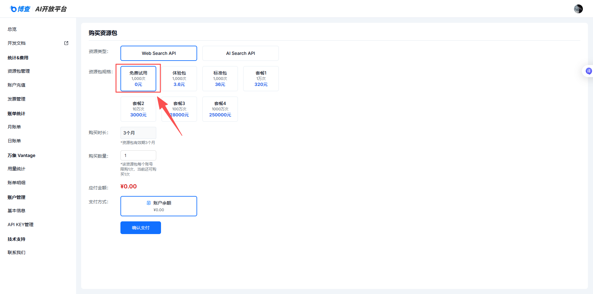
第三步：在 OpenAkita 桌面端配置
- 启动 OpenAkita 桌面应用程序。
- 在左侧导航栏中，找到并点击 「配置」 面板。
- 在配置界面中找到 「工具与技能」 选项，选择网页搜索源。
- 激活搜索源，选择 「博查 bocha」。
- 将刚才复制的博查 API Key 粘贴到对应的密钥输入框中。
- 点击 「测试连接」。如果连接成功，即可保存配置，应用并重启。
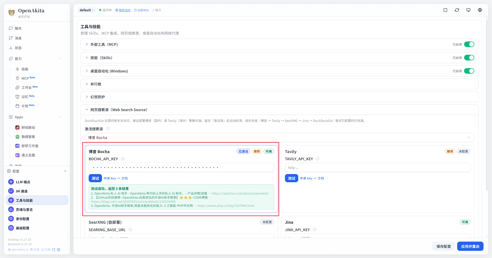
第四步：验证与使用
配置完成后，在 OpenAkita 的聊天界面中输入需要实时信息的问题（如「今天的科技新闻」）。如果 AI 智能助手能够成功返回带有网页链接和摘要的回答，说明配置已成功生效。
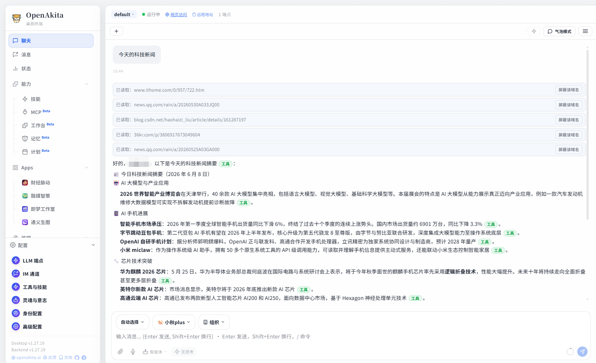
二、Tavily
第一步：获取 Tavily API Key
- 访问官网：打开 Tavily 官方网站（https://tavily.com 或 https://app.tavily.com）。
- 注册账号。
- 切换到 Overview，找到 API Keys，复制你的专属 API Key（通常以
tvly-开头）。
提示：Tavily 注册门槛较低，不需要绑定国外信用卡，每月提供 1000 次的免费调用额度。如果普通邮箱注册遇到问题，建议直接使用 GitHub 账号授权登录，这样可以顺利拿到 API Key。

第二步：在 OpenAkita 桌面端配置
- 打开配置面板：启动 OpenAkita 桌面应用程序，在界面中找到并进入「配置」或「工具/技能管理」面板。
- 定位搜索配置：在工具列表中找到 「Web Search Source（网络搜索源）」 模块。
- 切换搜索引擎：在搜索引擎的下拉选项或配置项中，将默认的搜索引擎切换为 Tavily。
- 填入 API Key：将刚才复制的 Tavily API Key 粘贴到对应的密钥输入框中。
- 保存并测试：点击保存配置，建议使用界面上的「测试连接」功能验证是否成功。
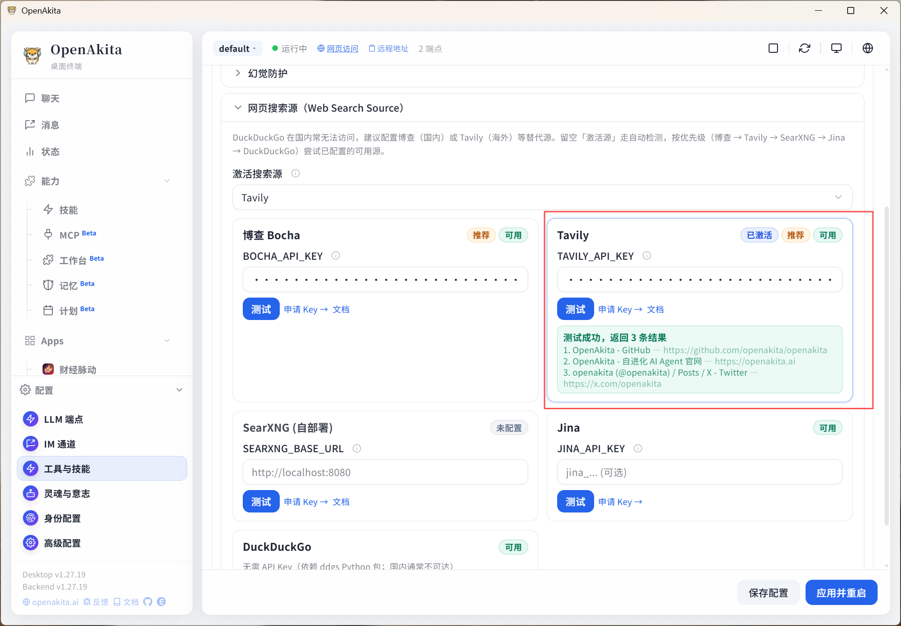
第三步：验证与使用
应用并重启后，在 OpenAkita 的对话界面中，直接向 AI 提问需要获取最新信息的问题（例如：「今天的科技新闻」）。如果 AI 能够成功调用 Tavily 并返回带有网页链接和摘要的结构化回答，说明配置已成功生效。
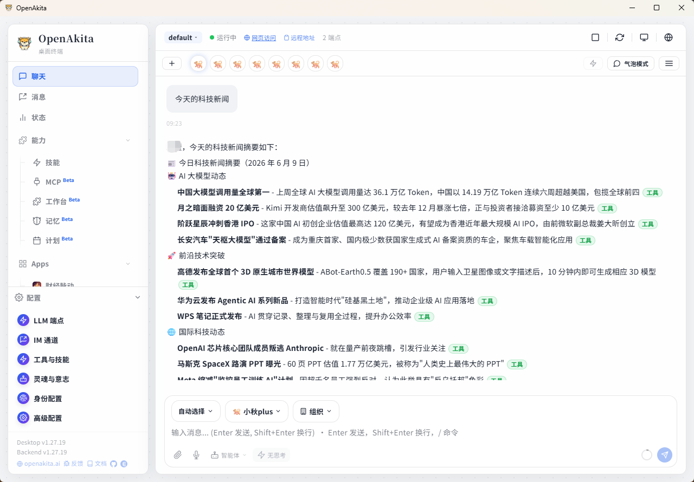
三、SearXNG
第一步：安装前环境检查
- 系统要求：确保你的系统是 Windows 10（21H2 及以上版本）或 Windows 11。CPU 至少 2 核 4G 内存（推荐 8G 以上）。
- 开启 CPU 虚拟化：按
Ctrl + Shift + Esc打开任务管理器，切换到「性能」→「CPU」选项卡。查看右下角是否显示「虚拟化：已启用」。如果显示「已禁用」，需要重启电脑进入 BIOS，找到VT-x、Virtualization Technology或SVM Mode选项并设置为 Enabled。
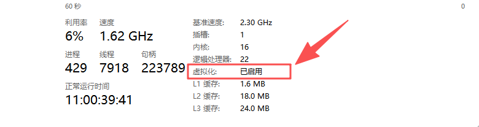
- 开启 WSL2 功能：按
Win + X键，选择「Windows 终端 (管理员)」或「PowerShell (管理员)」。输入命令wsl --install并回车。这会自动开启 WSL 相关功能并安装默认的 Ubuntu 发行版。完成后根据提示重启电脑。重启后会自动弹出 Ubuntu 终端，按提示设置用户名和密码即可。
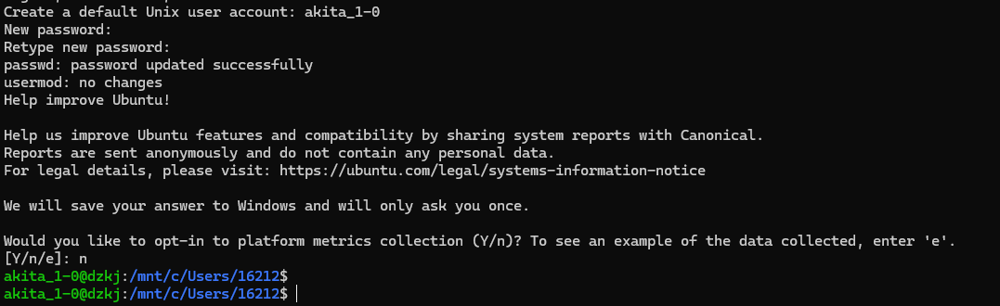
第二步：下载并安装 Docker Desktop
- 获取安装包：访问 Docker Desktop 官方下载页面：https://www.docker.com/products/docker-desktop/，点击「Download for Windows」下载最新版安装包（约 600MB）。
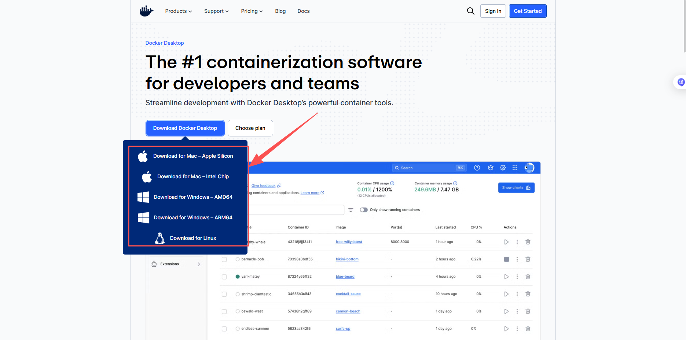
- 运行安装程序：双击下载好的
Docker Desktop Installer.exe。 - 完成安装并重启：等待安装进度条完成。建议勾选「Start Docker Desktop when you log in」（开机自启），然后点击「Close and restart」重启电脑。
第三步：首次启动与验证
- 接受协议：电脑重启后，Docker Desktop 会自动启动。首次运行会弹出服务协议（个人非商业使用完全免费），点击「Accept」接受。
- 等待就绪：启动需要 1-2 分钟，请观察桌面右下角的鲸鱼图标，当图标变绿且不再提示「Engine starting」时，说明 Docker 已正常运行。
- 验证安装：打开普通的 PowerShell 或命令提示符（CMD）。输入命令
docker --version，如果正常输出版本号（如Docker version 29.x.x），说明安装成功。进一步测试，输入docker run hello-world，如果输出了Hello from Docker!的欢迎信息，说明你的 Docker 环境已经完全配置成功，可以开始使用了。
注意：如果无法连接到 Docker Hub 官方仓库拉取镜像，可以配置可用的 Docker 镜像源。
- 打开 Docker Desktop → 点击右上角齿轮图标进入 Settings。
- 选择左侧菜单中的「Docker Engine」。
- 在右侧 JSON 配置中添加以下内容（以 DaoCloud、1Panel、hub.rat.dev 为例）：
{
"registry-mirrors": [
"https://docker.m.daocloud.io",
"https://docker.1panel.live",
"https://hub.rat.dev"
]
}- 点击「Apply & Restart」重启 Docker 服务。
- 重新执行
docker run hello-world，此时应从国内镜像源拉取，速度会显著提升。
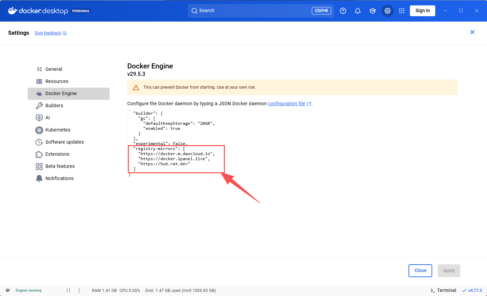
第四步：本地部署 SearXNG 服务
- 安装 Docker：确保你的电脑已安装并启动 Docker Desktop。
- 运行容器：打开终端或命令行工具，执行以下命令：
docker run -d --name searxng -p 8080:8080 searxng/searxng- 验证服务：打开浏览器，访问
http://localhost:8080。如果能看到 SearXNG 的搜索界面，说明部署成功。
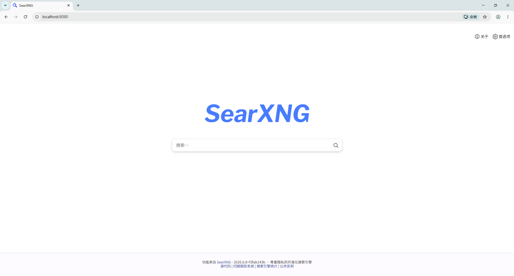
第五步：在 OpenAkita 中配置 SearXNG
- 打开配置：启动 OpenAkita 桌面应用，进入「配置」或「搜索源管理」面板。
- 选择 SearXNG：在搜索源列表中，找到并选中 SearXNG。
- 填写地址：在对应的输入框中，填入你本地 SearXNG 服务的地址：
http://localhost:8080- 保存并测试：点击保存，然后使用「测试连接」功能。如果返回成功，说明 OpenAkita 已成功连接到你的本地 SearXNG 服务。
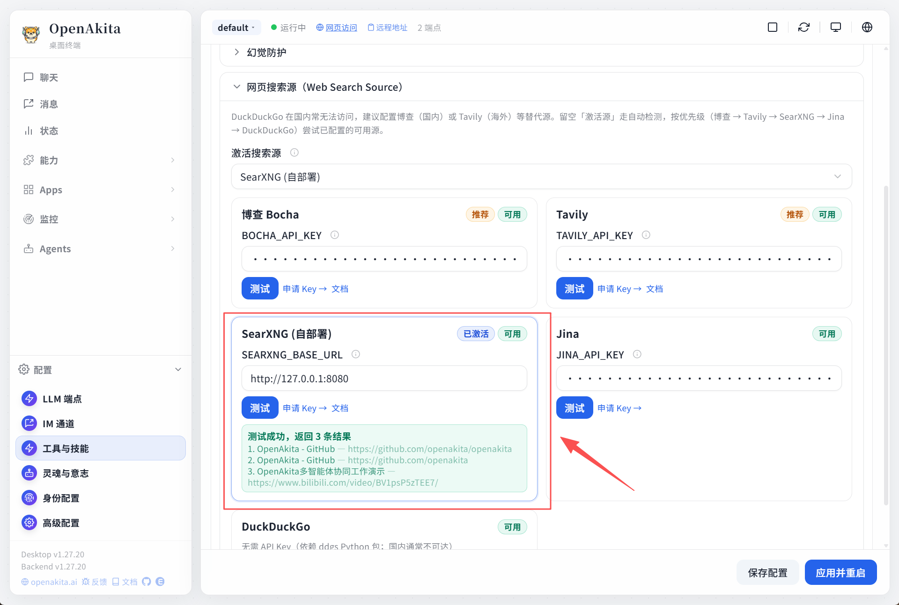
第六步：验证与使用
在 OpenAkita 的对话界面中，直接向 AI 提问需要获取最新信息的问题（例如：「今天的科技新闻」）。如果 AI 能够成功调用 SearXNG 并返回带有网页链接和摘要的结构化回答，说明配置已成功生效。
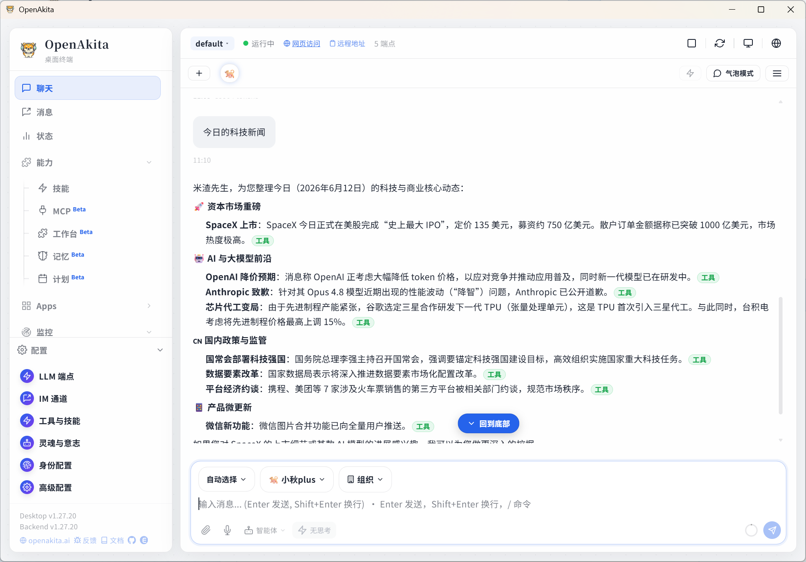
四、Jina
第一步：获取 Jina API Key
- 访问 Jina 官网（https://jina.ai/reader/）
- 进入「密钥和计费」页面，复制 API Key

第二步：在 OpenAkita 桌面端配置
- 打开配置面板：启动 OpenAkita 桌面应用程序，在界面中找到并进入「配置」或「工具/技能管理」面板。
- 定位搜索配置：在工具列表中找到 「Web Search Source（网络搜索源）」 模块。
- 切换搜索引擎：将激活搜索源的默认搜索引擎切换为 Jina。
- 填入 API Key：将刚才复制的 Jina API Key 粘贴到对应的密钥输入框中。
- 保存并测试：点击保存配置，建议使用界面上的「测试连接」功能验证是否成功。
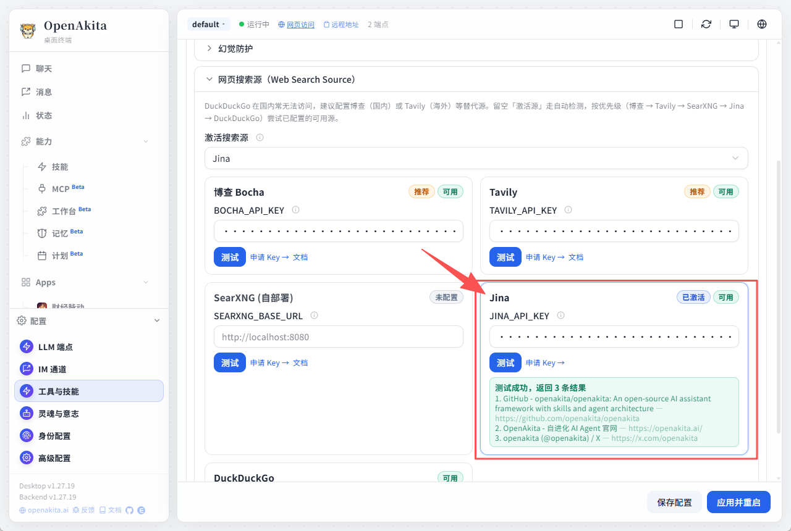
第三步：验证与使用
应用并重启后，在 OpenAkita 的对话界面中，直接向 AI 提问需要获取最新信息的问题（例如：「今天的科技新闻」）。如果 AI 能够成功调用 Jina 并返回带有网页链接和摘要的结构化回答，说明配置已成功生效。
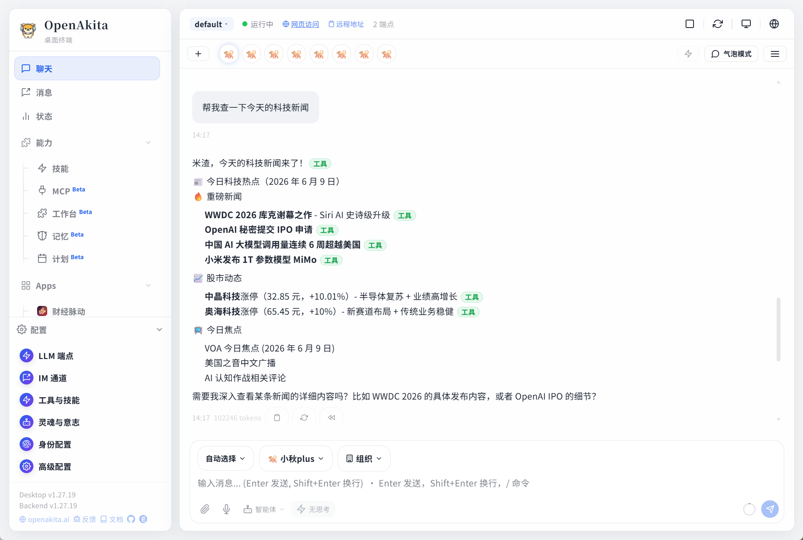